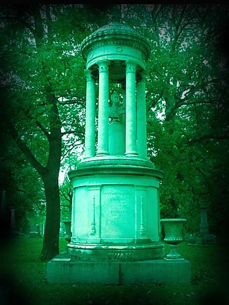
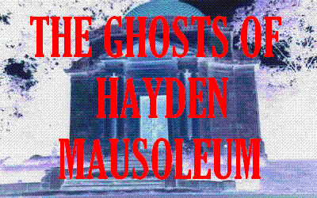
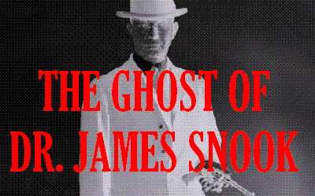
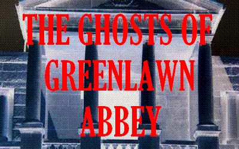
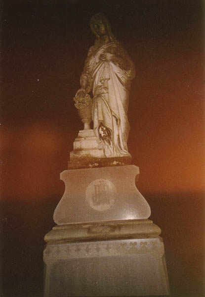
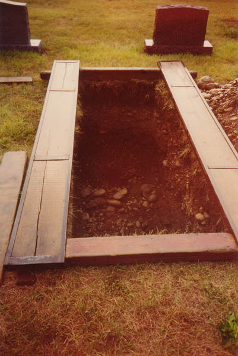
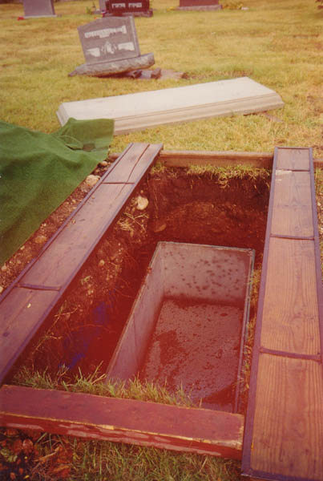
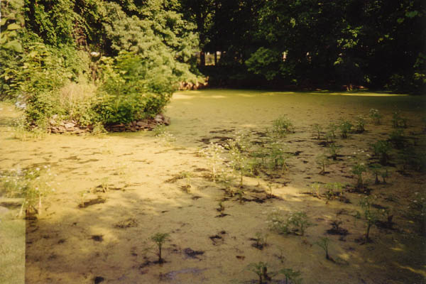
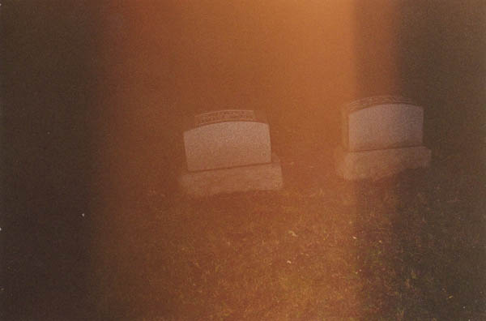
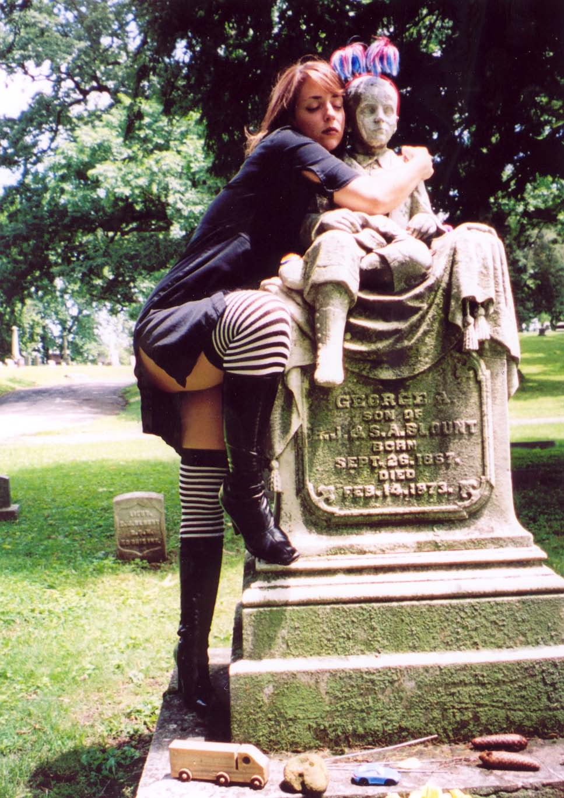

Any cemetery as big and old as Greenlawn has to have a few ghosts. As it turns out, Greenlawn has its share--nowhere near as many as some smaller, more decrepit graveyards, but enough ghostly folklore has attached itself to Greenlawn over the years that it's regularly included in the Columbus Landmarks Foundation's citywide ghost tours. The stories are general, in one way, to the point where the entire cemetery is thought of as haunted, but there are specific tales with their own creepy details to be told. Here you can find out about some of them.

First and foremost there is the Hayden Mausoleum, located at one end of the chapel driveway. Possibly the largest and most elaborate crypt on the cemetery grounds, it's hard to miss, and no tour of Greenlawn's earthbound spirits is complete without a knock on its thick metal doors. Peter Hayden's haunted mausoleum often rewards you with a knock in return--or something even more substantial. Or so they say. For more about the Hayden Mausoleum, click here.

Then there's Greenlawn's restless murderer: Head of OSU's College of Veterinary Medicine and Olympic pistol-shooting gold medalist James H. Snook, Ph.D. He killed his young student lover, Theora Hix, with a ball peen hammer and a pocket knife and left her body on a west side rifle range. That was on June 13, 1929; on February 28, 1930, Snook rode the lightning at the Ohio Pen on West Spring Street. They buried him in an unmarked grave, forever disgraced, and now he is seen watching over it, head bowed in shame. Read all about the murder and Dr. Snook's unhappy ghost here.

Other ghost stories are associated with the officially-unaffiliated Greenlawn Abbey, just a block or so down Greenlawn Avenue from the cemetery gate. Thurston the Magician, a contemporary and friend of Harry Houdini's, is entombed there, and his spirit, along with a number of others, is said to walk the echoey halls between the marble catacombs. To read more about the Abbey, click here.
A Night in Greenlawn Cemetery

After seeing the cemetery in the daylight, I decided I had to return at night and look for ghosts, or maybe zombies. So my girlfriend at the time and a friend and I packed up some flashlights and headed out to Greenlawn around midnight one night in August 2001. After a trip to the Abbey we parked around the corner from the cemetery gates, in front of an apartment complex called South Park Apartments, and walked in through the main entrance. Greenlawn closes at 8PM, but even when it's closed it's no challenge to get inside. I guess they figure a place this big is impossible to seal off.


Not necessarily haunted but still sort of morbid are the open graves you run into from time to time. In a cemetery this size burials are a constantly ongoing process, and open graves are a fairly common sight. What I found sort of shocking was how shallow six feet really is; you always imagine the bodies being way down there underground, but I stood in the open graves and had my head poking out. Above you can see the concrete coffin casing in one grave, waiting to be filled, and the side of an already-filled one next door.

Another weirdly creepy thing about Greenlawn is the swamp in the middle. A tiny creek runs into this sunken, stagnant pool, which is hidden by trees behind the Hayden Mausoleum. It's completely covered with bright green algae and lilypads and is actually sort of pretty, in a disgusting sort of way. As it turns out this was a quarry for many years; the story of the Greenlawn quarry is told on a plaque around the corner from the Hayden Mausoleum.

Our night trip turned out to be less scary than it was exhausting. We picked one of the hottest and most humid nights of the year to explore Greenlawn, which is roughly 8,000 square miles in size, on foot. By the time we were past the gates and visitors' center we were already tired, and getting lost on foot didn't help at all. We rested once on a bench-shaped gravestone and finally made our way back.
During the trip I approached the Hayden Mausoleum and looked inside. I knocked on the door and asked the ghost to come out. He didn't oblige. Dr. James Snook did not appear to us, head bowed over his disgraced resting place. And Thurston did not appear in a cloud of magician's smoke in the lobby of the Abbey. So no ghost sightings at Greenlawn this time. If you'd like to take a walking night tour of Greenlawn, make sure you know where you are in relationship to the exit. It is an amazing place, and one that not every Columbus resident really knows about. Maybe you'll come across one of the ghosts.

Back